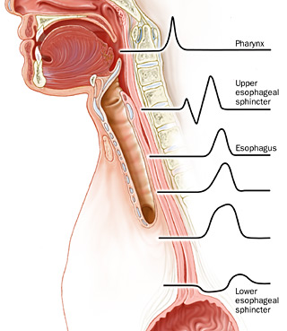

Oesophagus
- Anatomy & Physiology
Anatomy
Gross
Begins at C6, posterior to cricoid.
Runs posterior to aortic arch and L main bronchus
Enters abdo through the oesophageal hiatus.
- 2-4 cm lie abdominally
- maintained here by: reflection of peritoneum on stomach,
phrenoesophageal ligament (below peritoneum, on inferior diaphragm;
reflects in an orad direction and into circ. fibres).
Top 1/3 is skeletal, rest is smooth muscle.
Narrows at:
- cricoid cartilage (pharyngoesophageal sphincter)
- mid thorax (aortic arch & L main bronchus)
- esophageal hiatus (LES).
Distances from teeth:
15-20 cm to cricopharyngeus
20-25 cm to aortic arch
30-35 cm to inferior pulmonary vein
40-45 cm to GOJ
Wall
No serosa --> poorer healing
Inner circular muscle
Outer longitudinal muscle
Stratified squamous epithelium with mucous glands
Arteries
Inferior thyroids --> upper esophagus
Bronchial a's and esophageal branches of aorta --> thoracic part
L inferior phrenic and L gastric branches --> distal segment
Veins
More variable.
Lower esophagus veins --> coronary vein (tributary of portal vein)
When portal obstruction occurs, blood shunts upward through coronary
and esophageal plexus to get to azygous to SVC; varices.
Physiology
Coordinated function of UES, LES and esophageal body.
UES
Motor innervation from brain (n. ambiguous).
Continuously in tonic contraction; resting P 100 mm Hg.
Prevents air going down and reflux coming up.
During eating, pharynx contracts and UES relax together.
Regains resting tone after bolus reaches oesophagus.
Body
Contraction then initiated in upper oesophagus, progresses distally.
"Primary peristalsis" --> 3-4 cm/s, amplitudes 60-140 mm Hg.
"Secondary peristalsis" = reflex peristaltic wave secondary to stretch,
clears retained or refluxed contents.
LES
3-4 cm in length; resting P 15-24 mm Hg.
LES relaxes for 5-10s to allow a bolus to pass, then regains tone.
- mediated by CIP, NO (both nonadrenergic, non-cholinergic NTs)
- tone partly depends on intrinsic myogenic activity
Tendence to relax periodically - called "transient lower esophageal
sphincter relaxations".
- cause unknown, but probably related to gastric distention.
- these underlie much reflux in normals and GORD patients.
- decrease in length or pressure of LES (or both) also responsible for
reflux.
--> particularly in patients with severe oesophagistis.
Crus also contributes to resting tone of LES (pinchcock)
- protects against sudden intra-abdominal pressure rise, eg coughing,
bending.
--> this is lost when a sliding hiatal hernia is present.

Tests
Oesophageal Manometery
Key test for motility disorders.
Determines:
1. Location, pressure, relaxation of UES, and coordination with pharynx.
2. Pressure, duration and velocity of peristaltic wave propagation.
3. LES location, length, pressure and relaxation responses.
24-hr pH Monitoring
Gold standard for GERD.
Catheter placed 5cm above upper border of manometrically determined
LES, for 24 hrs.
Patient goes about usual business.
Establishes:
- pathologic amount of reflux? (pH<4)
- temporal correlation with reflux, symptoms.